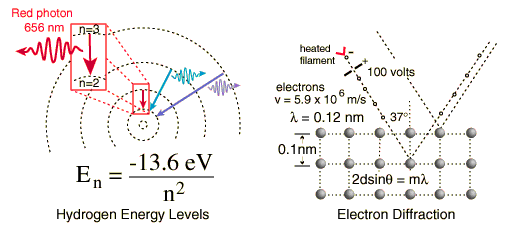

Examples of Electron Waves
Two specific examples supporting the wave nature of electrons as suggested in the DeBroglie hypothesis are the discrete atomic energy levels and the diffraction of electrons from crystal planes in solid materials. In the Bohr model of atomic energy levels, the electron waves can be visualized as "wrapping around" the circumference of an electron orbit in such a way as to experience constructive interference.

Click on either example for further details.
The wave nature of the electron must be invoked to explain the behavior of electrons when they are confined to dimensions on the order of the size of an atom. This wave nature is used for the quantum mechanical "particle in a box" and the result of this calculation is used to describe the density of energy states for electrons in solids.
|